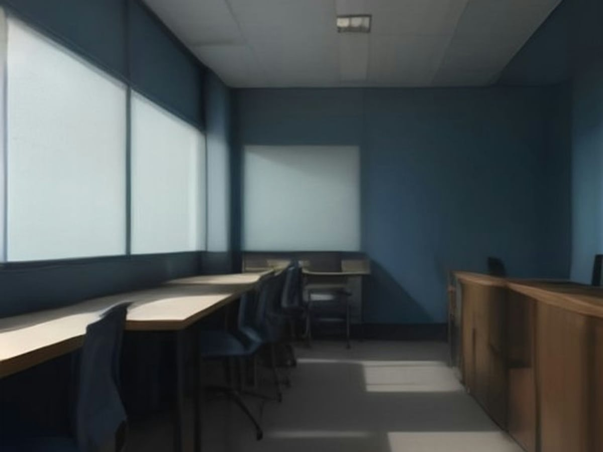

三分钟
从一句话到一张能练的卡
这条线只有五个动作：造例句、挑图、试听、打包、导出。每一步都有人的一票。
01
造一个词
输入一个词、一个固定说法，或者一整句。选条数，按「造料」。造的是句子，不是翻译——每一句都要交代谁在说、在哪、说完会怎样。
判型规则：有句末标点、开头是 I/you/they…、或者 6 词以上，就当整句处理。
确定性校验会拦四种情况：没含目标词、两句重复、场景照抄句子、场景相似度超过 0.86。不过就带着问题重试一次，还不过就报错。
02
挑一张图
搜到的候选图先过体检：短边 ≥ 640、≤ 4MB、文件头对得上、亮度标准差 ≥ 6（防纯色）、二阶差分 ≥ 1.1（防渐变）、量化色数占比 ≥ 0.02。过不了的直接丢，不进九宫格。

没有「自动入库」这条路。每张图必须有人点过头，才写得进清单。
03
听一遍语音
Edge TTS 零配置，装了就能用。一条一条听，听到 60% 才允许点「我听过了」——这个按钮点不下去，就导出不了。
R重放3.4 秒 · Ava
04
打包
打包前跑硬校验：缺图、缺人工复核、哈希不对，都会拒绝，并说清第几条差什么。
05
导出
默认导到 Downloads\dsh-etude\<词>-<id>\。先清空目标目录，拷完拿副本再验一遍——两处都过了才算「已复验」。
06
开始练
五面：听、说、读、写、改。每面给的东西不一样，灰掉不代表禁掉，是这一面不鼓励先看。